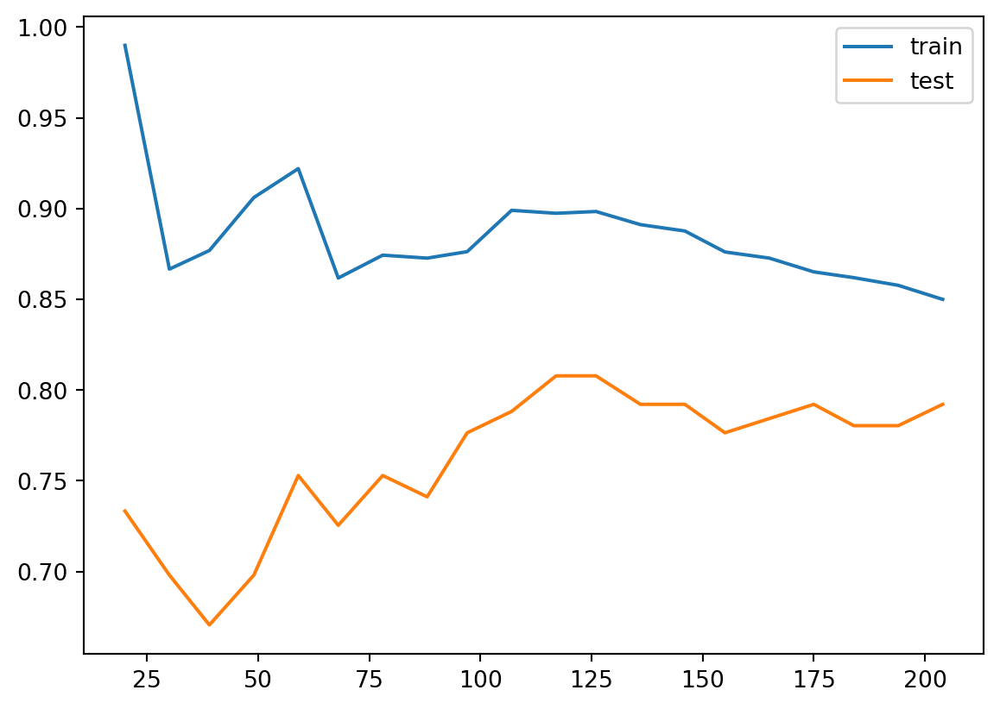
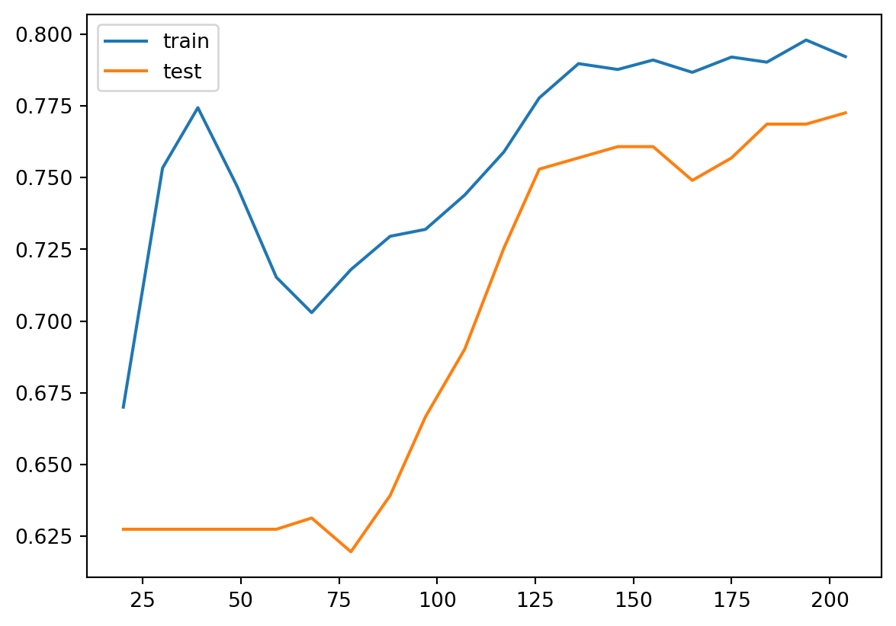

6 Logistic regression
Logistic regression is very similar to linear regression, but applied to classification problems. In this chpater our idea is to treat it as the simplest example of a neural network instead of using other methods. The code we developped in the last chapter will be used extensively.
6.1 Basic idea
Assume that we have a binary classfification problem with \(N\) features. Our model starts from the logit instead of the label \(y\) itself.
\[ logit(y)=\theta_0+\sum_{j=1}^N\theta_jx_j. \]
The logit function is used to describe the logorithm of the binary odds. The odd ratio is the ratio between the probability of success and the probability of failure. Assume the probability of success is \(p\). Then
\[ oddratio(p)=\frac{p}{1-p},\quad logit(p)=z = \log\left(\frac{p}{1-p}\right). \] We could solve the logit function, and get its inverse: the function is the Sigmoid function. Once we have the logit value, we could use it to get the probability. \[ p=\sigma(z)=\frac{1}{1+\mathrm{e}^{-z}}. \]
Therefore the model for Logistic regression is as follows:
\[ p=\sigma(L(x))=\sigma\left(\theta_0+\sum_{j=1}^n\theta_jx_j\right)=\sigma\left(\Theta \hat{x}^T\right). \]
6.1.1 Sigmoid function
The Sigmoid function is defined as follows:
\[ \sigma(z)=\frac{1}{1+\mathrm{e}^{-z}}. \] The graph of the function is shown below.
The main properties of \(\sigma\) are listed below as a Lemma.
Lemma 6.1 The Sigmoid function \(\sigma(z)\) satisfies the following properties.
- \(\sigma(z)\rightarrow \infty\) when \(z\mapsto \infty\).
- \(\sigma(z)\rightarrow -\infty\) when \(z\mapsto -\infty\).
- \(\sigma(0)=0.5\).
- \(\sigma(z)\) is always increasing.
- \(\sigma'(z)=\sigma(z)(1-\sigma(z))\).
Solution. We will only look at the last one.
\[ \begin{split} \sigma'(z)&=-\frac{(1+\mathrm e^{-z})'}{(1+\mathrm e^{-z})^2}=\frac{\mathrm e^{-z}}{(1+\mathrm e^{-z})^2}=\frac{1}{1+\mathrm e^{-z}}\frac{\mathrm e^{-z}}{1+\mathrm e^{-z}}\\ &=\sigma(z)\left(\frac{1+\mathrm e^{-z}}{1+\mathrm e^{-z}}-\frac{1}{1+\mathrm e^{-z}}\right)=\sigma(z)(1-\sigma(z)). \end{split} \]
6.1.2 Gradient descent
We would like to use Gradient descent to sovle Logistic regression problems. For binary classification problem, the cost function is defined to be
\[ J(\Theta)=-\frac1m\sum_{i=1}^m\left[y^{(i)}\log(p^{(i)})+(1-y^{(i)})\log(1-p^{(i)})\right]. \] Here \(m\) is the number of data points, \(y^{(i)}\) is the labelled result (which is either \(0\) or \(1\)), \(p^{(i)}\) is the predicted value (which is between \(0\) and \(1\)).
Note
The algorithm gets its name since we are using the gradient to find a direction to lower our height.
6.1.3 The Formulas
Theorem 6.1 The gradient of \(J\) is computed by
\[ \nabla J =\frac1m(\textbf{p}-\textbf{y})^T\hat{\textbf{X}}. \tag{6.1}\]
Click for details.
Proof. The formula is an application of the chain rule for the multivariable functions.
\[ \begin{split} \dfrac{\partial p}{\partial \theta_k}&=\dfrac{\partial}{\partial \theta_k}\sigma\left(\theta_0+\sum_{j=1}^n\theta_jx_j\right)=\dfrac{\partial}{\partial \theta_k}\sigma(L(\Theta))\\ &=\sigma(L)(1-\sigma(L))\dfrac{\partial}{\partial \theta_k}\left(\theta_0+\sum_{j=1}^n\theta_jx_j\right)\\ &=\begin{cases} p(1-p)&\text{ if }k=0,\\ p(1-p)x_k&\text{ otherwise}. \end{cases} \end{split} \] Then
\[ \nabla p = \left(\frac{\partial p}{\partial\theta_0},\ldots,\frac{\partial p}{\partial\theta_n}\right) = p(1-p)\hat{x}. \]
Then
\[ \nabla \log(p) = \frac{\nabla p}p =\frac{p(1-p)\hat{x}}{p}=(1-p)\hat{x}. \]
\[ \nabla \log(1-p) = \frac{-\nabla p}{1-p} =-\frac{p(1-p)\hat{x}}{1-p}=-p\hat{x}. \]
Then
\[ \begin{split} \nabla J& = -\frac1m\sum_{i=1}^m\left[y^{(i)}\nabla \log(p^{(i)})+(1-y^{(i)})\nabla \log(1-p^{(i)})\right]\\ &=-\frac1m\sum_{i=1}^m\left[y^{(i)}(1-p^{(i)})\hat{x}^{(i)}+(1-y^{(i)})(-p^{(i)}\hat{x}^{(i)})\right]\\ &=-\frac1m\sum_{i=1}^m\left[(y^{(i)}-p^{(i)})\hat{x}^{(i)}\right]. \end{split} \]
We write \(\hat{x}^{(i)}\) as row vectors, and stack all these row vectors vertically. What we get is a matrix \(\hat{\textbf X}\) of the size \(m\times (1+n)\). We stack all \(y^{(i)}\) (resp. \(p^{(i)}\)) vectically to get the \(m\)-dim column vector \(\textbf y\) (resp. \(\textbf p\)).
Using this notation, the previous formula becomes
\[ \nabla J =\frac1m(\textbf{p}-\textbf{y})^T\hat{\textbf{X}}. \]
After the gradient can be computed, we can start to use the gradient descent method. Note that, although \(\Theta\) are not explicitly presented in the formula of \(\nabla J\), this is used to modify \(\Theta\):
\[ \Theta_{s+1} = \Theta_s - \alpha\nabla J. \]
Note
If you directly use library, like sklearn or PyTorch, they will handle the concrete computation of these gradients.
6.2 Regularization
6.2.1 Three types of errors
Every estimator has its advantages and drawbacks. Its generalization error can be decomposed in terms of bias, variance and noise. The bias of an estimator is its average error for different training sets. The variance of an estimator indicates how sensitive it is to varying training sets. Noise is a property of the data.
6.2.2 Underfit vs Overfit
When fit a model to data, it is highly possible that the model is underfit or overfit.
Roughly speaking, underfit means the model is not sufficient to fit the training samples, and overfit means that the models learns too many noise from the data. In many cases, high bias is related to underfit, and high variance is related to overfit.
The following example is from the sklearn guide. Although it is a polynomial regression example, it grasps the key idea of underfit and overfit.

6.2.3 Learning curves (accuracy vs training size)
A learning curve shows the validation and training score of an estimator for varying a key hyperparameter. In most cases the key hyperparameter is the training size or the number of epochs. It is a tool to find out how much we benefit from altering the hyperparameter by training more data or training for more epochs, and whether the estimator suffers more from a variance error or a bias error.
sklearn provides sklearn.model_selection.learning_curve() to generate the values that are required to plot such a learning curve. However this function is just related to the sample size. If we would like to talk about epochs, we need other packages.
Let us first look at the learning curve about sample size. The official document page is here. The function takes input estimator, dataset X, y, and an arry-like argument train_sizes. The dataset (X, y) will be split into pieces using the cross-validation technique. The number of pieces is set by the argument cv. The default value is cv=5. For details about cross-validation please see Section 2.2.5.
Then the model is trained over a random sample of the training set, and evaluate the score over the test set. The size of the sample of the training set is set by the argument train_sizes. This argument is array-like. Therefore the process will be repeated several times, and we can see the impact of increasing the training size.
The output contains three pieces. The first is train_sizes_abs which is the number of elements in each training set. This output is mainly for reference. The difference between the output and the input train_sizes is that the input can be float which represents the percentagy. The output is always the exact number of elements.
The second output is train_scores and the third is test_scores, both of which are the scores we get from the training and testing process. Note that both are 2D numpy arrays, of the size (number of different sizes, cv). Each row is a 1D numpy array representing the cross-validation scores, which is corresponding to a train size. If we want the mean as the cross-validation score, we could use train_scores.mean(axis=1).
After understanding the input and output, we could plot the learning curve. We still use the horse colic as the example. The details about the dataset can be found here.
import pandas as pd
import numpy as np
from sklearn.model_selection import train_test_split
filepath = "assests/datasets/horse_colic_clean.csv"
df = pd.read_csv(filepath)
X = df.iloc[:, :22].to_numpy().astype(float)
y = (df.iloc[:, 22]<2).to_numpy().astype(int)
SEED = 42
X_train, X_test, y_train, y_test = train_test_split(X, y, test_size=0.15, random_state=SEED)We use the model LogisticRegression. The following code plot the learning curve for this model.
from sklearn.linear_model import LogisticRegression
from sklearn.preprocessing import MinMaxScaler
from sklearn.pipeline import Pipeline
clf = LogisticRegression(max_iter=1000)
steps = [('scalar', MinMaxScaler()),
('log', clf)]
pipe = Pipeline(steps=steps)
from sklearn.model_selection import learning_curve
import numpy as np
train_sizes, train_scores, test_scores = learning_curve(pipe, X_train, y_train,
train_sizes=np.linspace(0.1, 1, 20))
import matplotlib.pyplot as plt
plt.plot(train_sizes, train_scores.mean(axis=1), label='train')
plt.plot(train_sizes, test_scores.mean(axis=1), label='test')
plt.legend()
The learning curve is a primary tool for us to study the bias and variance. Usually
- If the two training curve and the testing curve are very close to each other, this means that the variance is low. Otherwise the variance is high, and this means that the model probabily suffer from overfitting.
- If the absolute training curve score is high, this means that the bias is low. Otherwise the bias is high, and this means that the model probabily suffer from underfitting.
In the above example, although regularization is applied by default, you may still notice some overfitting there.
6.2.4 Regularization
Regularization is a technique to deal with overfitting. Here we only talk about the simplest method: ridge regression, also known as Tikhonov regularizaiton. Because of the formula given below, it is also called \(L_2\) regularization. The idea is to add an additional term \(\dfrac{\alpha}{2m}\sum_{i=1}^m\theta_i^2\) to the original cost function. When training with the new cost function, this additional term will force the parameters in the original term to be as small as possible. After finishing training, the additional term will be dropped, and we use the original cost function for validation and testing. Note that in the additional term \(\theta_0\) is not presented.
The hyperparameter \(\alpha\) is the regularization strength. If \(\alpha=0\), the new cost function becomes the original one; If \(\alpha\) is very large, the additional term dominates, and it will force all parameters to be almost \(0\). In different context, the regularization strength is also given by \(C=\dfrac{1}{2\alpha}\), called inverse of regularization strength.
6.2.4.1 The math of regularization
Theorem 6.2 The gradient of the ridge regression cost function is
\[ \nabla J=\frac1m(\textbf{p}-\textbf{y})^T\hat{\textbf{X}}+\frac{\alpha}{m}\Theta. \]
Note that \(\Theta\) doesn’t contain \(\theta_0\), or you may treat \(\theta_0=0\).
The computation is straightforward.
6.2.4.2 The code
Regularization is directly provided by the logistic regression functions.
- In
LogisticRegression, the regularization is given by the argumentpenaltyandC.penaltyspecifies the regularizaiton method. It isl2by default, which is the method above.Cis the inverse of regularization strength, whose default value is1. - In
SGDClassifier, the regularization is given by the argumentpenaltyandalpha.penaltyis the same as that inLogisticRegression, andalphais the regularization strength, whose default value is0.0001.
Let us see the above example.
clf = LogisticRegression(max_iter=1000, C=0.1)
steps = [('scalar', MinMaxScaler()),
('log', clf)]
pipe = Pipeline(steps=steps)
from sklearn.model_selection import learning_curve
import numpy as np
train_sizes, train_scores, test_scores = learning_curve(pipe, X_train, y_train,
train_sizes=np.linspace(0.1, 1, 20))
import matplotlib.pyplot as plt
plt.plot(train_sizes, train_scores.mean(axis=1), label='train')
plt.plot(train_sizes, test_scores.mean(axis=1), label='test')
plt.legend()
After we reduce C from 1 to 0.1, the regularization strength is increased. Then you may find that the gap between the two curves are reduced. However the overall performace is also reduced, from 85%~90% in C=1 case to around 80% in C=0.1 case. This means that the model doesn’t fit the data well as the previous one. Therefore this is a trade-off: decrease the variance but increase the bias.
6.3 Neural network implement of Logistic regression
In the previous sections, we use gradient descent to run the Logistic regression model. We mentioned some important concepts, like epochs, mini-batch, etc.. We are going to use PyTorch to implement it. We will reuse many codes we wrote in the previous chapter.
6.3.1 Example
We still use the horse colic dataset as an example. We first prepare the dataset.
import pandas as pd
import numpy as np
from sklearn.model_selection import train_test_split
filepath = "assests/datasets/horse_colic_clean.csv"
df = pd.read_csv(filepath)
X = df.iloc[:, :22].to_numpy().astype(float)
y = (df.iloc[:, 22]<2).to_numpy().astype(int)
SEED = 42
X_train, X_test, y_train, y_test = train_test_split(X, y, test_size=0.15, random_state=SEED)We need to perform normalization before throwing the data into the model. Here we use the MinMaxScaler() from sklearn package.
from sklearn.preprocessing import MinMaxScaler
mms = MinMaxScaler()
X_train = mms.fit_transform(X_train, y_train)
X_test = mms.transform(X_test)Then we write a Dataset class to build the dataset and create the dataloaders. Since the set is already split, we don’t need to random_split here.
import torch
from torch.utils.data import Dataset, DataLoader
class MyData(Dataset):
def __init__(self, X, y):
self.X = torch.tensor(X, dtype=float)
self.y = torch.tensor(y, dtype=float).reshape(-1, 1)
def __getitem__(self, index):
return (self.X[index], self.y[index])
def __len__(self):
return len(self.y)
train_set = MyData(X_train, y_train)
val_set = MyData(X_test, y_test)
train_loader = DataLoader(train_set, batch_size=32, shuffle=True)
val_loader = DataLoader(val_set, batch_size=32)In the following code, we first set up the original model.
import torch.nn as nn
from torch.nn.modules import Linear
class LoR(nn.Module):
def __init__(self, *args, **kwargs) -> None:
super().__init__(*args, **kwargs)
self.linear = Linear(in_features=22, out_features=1, dtype=float)
self.activation = nn.Sigmoid()
def forward(self, X):
# pred = self.activation(self.linear(X))
pred = self.linear(X)
# return (pred >= 0).float()
return predThen we run our regular training loop.
import time
import matplotlib.pyplot as plt
from torch.optim import SGD
from torch.nn import BCEWithLogitsLoss
model = LoR()
optim = SGD(model.parameters(), lr=0.2)
loss_fn = BCEWithLogitsLoss()
n_epochs = 30
class Meter:
def __init__(self, total=0.0, count=0, value=0.0):
self.total = total
self.count = count
self.value = value
self.avg = self.total / self.count if self.count > 0 else 0.0
def update(self, value, n=1):
self.value = value
self.total += value * n
self.count += n
self.avg = self.total / self.count if self.count > 0 else 0.0
history = {'loss': [], 'acc': [], 'loss_test': [], 'acc_test': []}
for epoch in range(n_epochs):
monitor_loss = Meter()
monitor_loss_test = Meter()
monitor_acc = Meter()
monitor_acc_test = Meter()
monitor_time = Meter()
for i, (X_batch, y_batch) in enumerate(train_loader):
model.train()
t0 = time.perf_counter()
optim.zero_grad()
p = model(X_batch)
loss = loss_fn(p, y_batch)
loss.backward()
optim.step()
t1 = time.perf_counter()
with torch.no_grad():
pred = (p>0).to(torch.long)
acc = (pred == y_batch).to(torch.float).mean().item()
monitor_acc.update(acc, n=X_batch.shape[0])
monitor_loss.update(loss.item(), n=X_batch.shape[0])
monitor_time.update(t1-t0, n=1)
print(
f'epoch: {epoch}, batch: {i+1}/{len(train_loader)} '
f'time: {monitor_time.value: .4f} ({monitor_time.total: .4f}) '
f'loss: {monitor_loss.value: .4f} ({monitor_loss.avg: .4f}) '
f'acc: {monitor_acc.value: .2f} ({monitor_acc.avg: .2f})'
)
history['loss'].append(monitor_loss.avg)
history['acc'].append(monitor_acc.avg)
with torch.no_grad():
model.eval()
for X_batch_test, y_batch_test in val_loader:
p = model(X_batch_test)
loss_test = loss_fn(p, y_batch_test)
monitor_loss_test.update(loss_test.item(), n=X_batch_test.shape[0])
pred_test = (p>0).to(torch.int)
acc_test = ( pred_test == y_batch_test).to(torch.float).mean().item()
monitor_acc_test.update(acc_test, n=X_batch_test.shape[0])
print(
f'test epoch {epoch} '
f'test loss: {monitor_loss_test.avg: .4f} '
f'test acc: {monitor_acc_test.avg: .2f}'
)
history['loss_test'].append(monitor_loss_test.avg)
history['acc_test'].append(monitor_acc_test.avg)
fig, axs = plt.subplots(1, 2)
fig.set_size_inches((10,3))
axs[0].plot(history['loss'], label='training_loss')
axs[0].plot(history['loss_test'], label='testing_loss')
axs[0].legend()
axs[1].plot(history['acc'], label='training_acc')
axs[1].plot(history['acc_test'], label='testing_acc')
axs[1].legend()
axs[0].set_title('Loss');
axs[1].set_title('Accuracy');Click to view results
epoch: 0, batch: 1/10 time: 0.0022 ( 0.0022) loss: 0.6584 ( 0.6584) acc: 0.75 ( 0.75)
epoch: 0, batch: 2/10 time: 0.0005 ( 0.0027) loss: 0.7044 ( 0.6814) acc: 0.59 ( 0.67)
epoch: 0, batch: 3/10 time: 0.0003 ( 0.0030) loss: 0.6570 ( 0.6733) acc: 0.72 ( 0.69)
epoch: 0, batch: 4/10 time: 0.0003 ( 0.0033) loss: 0.7152 ( 0.6838) acc: 0.56 ( 0.66)
epoch: 0, batch: 5/10 time: 0.0003 ( 0.0035) loss: 0.6857 ( 0.6842) acc: 0.56 ( 0.64)
epoch: 0, batch: 6/10 time: 0.0003 ( 0.0038) loss: 0.6566 ( 0.6796) acc: 0.66 ( 0.64)
epoch: 0, batch: 7/10 time: 0.0003 ( 0.0041) loss: 0.6427 ( 0.6743) acc: 0.66 ( 0.64)
epoch: 0, batch: 8/10 time: 0.0003 ( 0.0043) loss: 0.6190 ( 0.6674) acc: 0.72 ( 0.65)
epoch: 0, batch: 9/10 time: 0.0003 ( 0.0046) loss: 0.6959 ( 0.6706) acc: 0.50 ( 0.64)
epoch: 0, batch: 10/10 time: 0.0003 ( 0.0049) loss: 0.7219 ( 0.6745) acc: 0.38 ( 0.62)
test epoch 0 test loss: 0.6541 test acc: 0.73
epoch: 1, batch: 1/10 time: 0.0003 ( 0.0003) loss: 0.6616 ( 0.6616) acc: 0.75 ( 0.75)
epoch: 1, batch: 2/10 time: 0.0003 ( 0.0005) loss: 0.6560 ( 0.6588) acc: 0.66 ( 0.70)
epoch: 1, batch: 3/10 time: 0.0003 ( 0.0008) loss: 0.6504 ( 0.6560) acc: 0.81 ( 0.74)
epoch: 1, batch: 4/10 time: 0.0003 ( 0.0011) loss: 0.6697 ( 0.6594) acc: 0.66 ( 0.72)
epoch: 1, batch: 5/10 time: 0.0003 ( 0.0014) loss: 0.6172 ( 0.6510) acc: 0.78 ( 0.73)
epoch: 1, batch: 6/10 time: 0.0003 ( 0.0016) loss: 0.6446 ( 0.6499) acc: 0.62 ( 0.71)
epoch: 1, batch: 7/10 time: 0.0003 ( 0.0019) loss: 0.6477 ( 0.6496) acc: 0.62 ( 0.70)
epoch: 1, batch: 8/10 time: 0.0003 ( 0.0022) loss: 0.6102 ( 0.6447) acc: 0.69 ( 0.70)
epoch: 1, batch: 9/10 time: 0.0003 ( 0.0024) loss: 0.6013 ( 0.6399) acc: 0.75 ( 0.70)
epoch: 1, batch: 10/10 time: 0.0003 ( 0.0027) loss: 0.6371 ( 0.6396) acc: 0.62 ( 0.70)
test epoch 1 test loss: 0.6211 test acc: 0.62
epoch: 2, batch: 1/10 time: 0.0003 ( 0.0003) loss: 0.6241 ( 0.6241) acc: 0.66 ( 0.66)
epoch: 2, batch: 2/10 time: 0.0003 ( 0.0005) loss: 0.6928 ( 0.6584) acc: 0.59 ( 0.62)
epoch: 2, batch: 3/10 time: 0.0005 ( 0.0010) loss: 0.6390 ( 0.6520) acc: 0.62 ( 0.62)
epoch: 2, batch: 4/10 time: 0.0004 ( 0.0014) loss: 0.5751 ( 0.6328) acc: 0.81 ( 0.67)
epoch: 2, batch: 5/10 time: 0.0006 ( 0.0019) loss: 0.6836 ( 0.6429) acc: 0.53 ( 0.64)
epoch: 2, batch: 6/10 time: 0.0005 ( 0.0024) loss: 0.5619 ( 0.6294) acc: 0.75 ( 0.66)
epoch: 2, batch: 7/10 time: 0.0004 ( 0.0028) loss: 0.5764 ( 0.6218) acc: 0.75 ( 0.67)
epoch: 2, batch: 8/10 time: 0.0004 ( 0.0032) loss: 0.6054 ( 0.6198) acc: 0.62 ( 0.67)
epoch: 2, batch: 9/10 time: 0.0003 ( 0.0035) loss: 0.6098 ( 0.6187) acc: 0.66 ( 0.67)
epoch: 2, batch: 10/10 time: 0.0003 ( 0.0038) loss: 0.6017 ( 0.6174) acc: 0.67 ( 0.67)
test epoch 2 test loss: 0.6008 test acc: 0.68
epoch: 3, batch: 1/10 time: 0.0003 ( 0.0003) loss: 0.5425 ( 0.5425) acc: 0.81 ( 0.81)
epoch: 3, batch: 2/10 time: 0.0003 ( 0.0006) loss: 0.5580 ( 0.5503) acc: 0.72 ( 0.77)
epoch: 3, batch: 3/10 time: 0.0003 ( 0.0008) loss: 0.6470 ( 0.5825) acc: 0.62 ( 0.72)
epoch: 3, batch: 4/10 time: 0.0003 ( 0.0011) loss: 0.6384 ( 0.5965) acc: 0.62 ( 0.70)
epoch: 3, batch: 5/10 time: 0.0003 ( 0.0014) loss: 0.5693 ( 0.5910) acc: 0.69 ( 0.69)
epoch: 3, batch: 6/10 time: 0.0003 ( 0.0016) loss: 0.5759 ( 0.5885) acc: 0.72 ( 0.70)
epoch: 3, batch: 7/10 time: 0.0003 ( 0.0019) loss: 0.5581 ( 0.5842) acc: 0.72 ( 0.70)
epoch: 3, batch: 8/10 time: 0.0003 ( 0.0022) loss: 0.6703 ( 0.5949) acc: 0.59 ( 0.69)
epoch: 3, batch: 9/10 time: 0.0003 ( 0.0024) loss: 0.5802 ( 0.5933) acc: 0.75 ( 0.69)
epoch: 3, batch: 10/10 time: 0.0003 ( 0.0027) loss: 0.6372 ( 0.5967) acc: 0.54 ( 0.68)
test epoch 3 test loss: 0.5868 test acc: 0.71
epoch: 4, batch: 1/10 time: 0.0003 ( 0.0003) loss: 0.6048 ( 0.6048) acc: 0.69 ( 0.69)
epoch: 4, batch: 2/10 time: 0.0003 ( 0.0006) loss: 0.5619 ( 0.5833) acc: 0.75 ( 0.72)
epoch: 4, batch: 3/10 time: 0.0004 ( 0.0010) loss: 0.5671 ( 0.5779) acc: 0.75 ( 0.73)
epoch: 4, batch: 4/10 time: 0.0003 ( 0.0013) loss: 0.5956 ( 0.5823) acc: 0.75 ( 0.73)
epoch: 4, batch: 5/10 time: 0.0004 ( 0.0017) loss: 0.5915 ( 0.5841) acc: 0.72 ( 0.73)
epoch: 4, batch: 6/10 time: 0.0003 ( 0.0021) loss: 0.5150 ( 0.5726) acc: 0.91 ( 0.76)
epoch: 4, batch: 7/10 time: 0.0003 ( 0.0024) loss: 0.6464 ( 0.5832) acc: 0.59 ( 0.74)
epoch: 4, batch: 8/10 time: 0.0003 ( 0.0027) loss: 0.5387 ( 0.5776) acc: 0.75 ( 0.74)
epoch: 4, batch: 9/10 time: 0.0003 ( 0.0030) loss: 0.6427 ( 0.5848) acc: 0.59 ( 0.72)
epoch: 4, batch: 10/10 time: 0.0003 ( 0.0033) loss: 0.5574 ( 0.5827) acc: 0.79 ( 0.73)
test epoch 4 test loss: 0.5750 test acc: 0.73
epoch: 5, batch: 1/10 time: 0.0003 ( 0.0003) loss: 0.5797 ( 0.5797) acc: 0.69 ( 0.69)
epoch: 5, batch: 2/10 time: 0.0003 ( 0.0006) loss: 0.5209 ( 0.5503) acc: 0.81 ( 0.75)
epoch: 5, batch: 3/10 time: 0.0003 ( 0.0009) loss: 0.6054 ( 0.5687) acc: 0.72 ( 0.74)
epoch: 5, batch: 4/10 time: 0.0003 ( 0.0013) loss: 0.5838 ( 0.5725) acc: 0.62 ( 0.71)
epoch: 5, batch: 5/10 time: 0.0003 ( 0.0016) loss: 0.5455 ( 0.5671) acc: 0.78 ( 0.72)
epoch: 5, batch: 6/10 time: 0.0003 ( 0.0019) loss: 0.6077 ( 0.5738) acc: 0.66 ( 0.71)
epoch: 5, batch: 7/10 time: 0.0003 ( 0.0022) loss: 0.5492 ( 0.5703) acc: 0.84 ( 0.73)
epoch: 5, batch: 8/10 time: 0.0003 ( 0.0026) loss: 0.6037 ( 0.5745) acc: 0.62 ( 0.72)
epoch: 5, batch: 9/10 time: 0.0003 ( 0.0029) loss: 0.6508 ( 0.5830) acc: 0.56 ( 0.70)
epoch: 5, batch: 10/10 time: 0.0003 ( 0.0033) loss: 0.4544 ( 0.5731) acc: 0.88 ( 0.71)
test epoch 5 test loss: 0.5655 test acc: 0.73
epoch: 6, batch: 1/10 time: 0.0003 ( 0.0003) loss: 0.5311 ( 0.5311) acc: 0.75 ( 0.75)
epoch: 6, batch: 2/10 time: 0.0004 ( 0.0008) loss: 0.5566 ( 0.5438) acc: 0.69 ( 0.72)
epoch: 6, batch: 3/10 time: 0.0003 ( 0.0011) loss: 0.5546 ( 0.5474) acc: 0.75 ( 0.73)
epoch: 6, batch: 4/10 time: 0.0003 ( 0.0014) loss: 0.5244 ( 0.5417) acc: 0.84 ( 0.76)
epoch: 6, batch: 5/10 time: 0.0003 ( 0.0017) loss: 0.5732 ( 0.5480) acc: 0.72 ( 0.75)
epoch: 6, batch: 6/10 time: 0.0003 ( 0.0019) loss: 0.6045 ( 0.5574) acc: 0.62 ( 0.73)
epoch: 6, batch: 7/10 time: 0.0003 ( 0.0022) loss: 0.5773 ( 0.5602) acc: 0.72 ( 0.73)
epoch: 6, batch: 8/10 time: 0.0003 ( 0.0025) loss: 0.5471 ( 0.5586) acc: 0.75 ( 0.73)
epoch: 6, batch: 9/10 time: 0.0003 ( 0.0027) loss: 0.6237 ( 0.5658) acc: 0.62 ( 0.72)
epoch: 6, batch: 10/10 time: 0.0003 ( 0.0030) loss: 0.5710 ( 0.5662) acc: 0.75 ( 0.72)
test epoch 6 test loss: 0.5595 test acc: 0.73
epoch: 7, batch: 1/10 time: 0.0003 ( 0.0003) loss: 0.4970 ( 0.4970) acc: 0.78 ( 0.78)
epoch: 7, batch: 2/10 time: 0.0003 ( 0.0006) loss: 0.5936 ( 0.5453) acc: 0.62 ( 0.70)
epoch: 7, batch: 3/10 time: 0.0003 ( 0.0008) loss: 0.6611 ( 0.5839) acc: 0.59 ( 0.67)
epoch: 7, batch: 4/10 time: 0.0003 ( 0.0011) loss: 0.5075 ( 0.5648) acc: 0.81 ( 0.70)
epoch: 7, batch: 5/10 time: 0.0003 ( 0.0014) loss: 0.6279 ( 0.5774) acc: 0.62 ( 0.69)
epoch: 7, batch: 6/10 time: 0.0003 ( 0.0017) loss: 0.5523 ( 0.5732) acc: 0.75 ( 0.70)
epoch: 7, batch: 7/10 time: 0.0003 ( 0.0019) loss: 0.5473 ( 0.5695) acc: 0.75 ( 0.71)
epoch: 7, batch: 8/10 time: 0.0003 ( 0.0022) loss: 0.5202 ( 0.5633) acc: 0.75 ( 0.71)
epoch: 7, batch: 9/10 time: 0.0003 ( 0.0025) loss: 0.5188 ( 0.5584) acc: 0.81 ( 0.72)
epoch: 7, batch: 10/10 time: 0.0003 ( 0.0028) loss: 0.5376 ( 0.5568) acc: 0.75 ( 0.72)
test epoch 7 test loss: 0.5524 test acc: 0.73
epoch: 8, batch: 1/10 time: 0.0003 ( 0.0003) loss: 0.5120 ( 0.5120) acc: 0.72 ( 0.72)
epoch: 8, batch: 2/10 time: 0.0003 ( 0.0006) loss: 0.6222 ( 0.5671) acc: 0.66 ( 0.69)
epoch: 8, batch: 3/10 time: 0.0003 ( 0.0009) loss: 0.5453 ( 0.5599) acc: 0.75 ( 0.71)
epoch: 8, batch: 4/10 time: 0.0005 ( 0.0014) loss: 0.5277 ( 0.5518) acc: 0.72 ( 0.71)
epoch: 8, batch: 5/10 time: 0.0035 ( 0.0049) loss: 0.5859 ( 0.5586) acc: 0.72 ( 0.71)
epoch: 8, batch: 6/10 time: 0.0007 ( 0.0056) loss: 0.5251 ( 0.5530) acc: 0.72 ( 0.71)
epoch: 8, batch: 7/10 time: 0.0004 ( 0.0060) loss: 0.5165 ( 0.5478) acc: 0.69 ( 0.71)
epoch: 8, batch: 8/10 time: 0.0004 ( 0.0064) loss: 0.4864 ( 0.5402) acc: 0.88 ( 0.73)
epoch: 8, batch: 9/10 time: 0.0004 ( 0.0069) loss: 0.6029 ( 0.5471) acc: 0.69 ( 0.73)
epoch: 8, batch: 10/10 time: 0.0004 ( 0.0072) loss: 0.5846 ( 0.5500) acc: 0.75 ( 0.73)
test epoch 8 test loss: 0.5491 test acc: 0.71
epoch: 9, batch: 1/10 time: 0.0004 ( 0.0004) loss: 0.4657 ( 0.4657) acc: 0.75 ( 0.75)
epoch: 9, batch: 2/10 time: 0.0003 ( 0.0007) loss: 0.5291 ( 0.4974) acc: 0.75 ( 0.75)
epoch: 9, batch: 3/10 time: 0.0003 ( 0.0011) loss: 0.5921 ( 0.5290) acc: 0.66 ( 0.72)
epoch: 9, batch: 4/10 time: 0.0003 ( 0.0014) loss: 0.5263 ( 0.5283) acc: 0.72 ( 0.72)
epoch: 9, batch: 5/10 time: 0.0003 ( 0.0017) loss: 0.5122 ( 0.5251) acc: 0.81 ( 0.74)
epoch: 9, batch: 6/10 time: 0.0003 ( 0.0021) loss: 0.6247 ( 0.5417) acc: 0.66 ( 0.72)
epoch: 9, batch: 7/10 time: 0.0003 ( 0.0024) loss: 0.5446 ( 0.5421) acc: 0.66 ( 0.71)
epoch: 9, batch: 8/10 time: 0.0007 ( 0.0031) loss: 0.5521 ( 0.5433) acc: 0.75 ( 0.72)
epoch: 9, batch: 9/10 time: 0.0005 ( 0.0036) loss: 0.5627 ( 0.5455) acc: 0.72 ( 0.72)
epoch: 9, batch: 10/10 time: 0.0004 ( 0.0040) loss: 0.5223 ( 0.5437) acc: 0.79 ( 0.72)
test epoch 9 test loss: 0.5460 test acc: 0.75
epoch: 10, batch: 1/10 time: 0.0003 ( 0.0003) loss: 0.5409 ( 0.5409) acc: 0.75 ( 0.75)
epoch: 10, batch: 2/10 time: 0.0003 ( 0.0006) loss: 0.4766 ( 0.5088) acc: 0.81 ( 0.78)
epoch: 10, batch: 3/10 time: 0.0003 ( 0.0008) loss: 0.6287 ( 0.5487) acc: 0.66 ( 0.74)
epoch: 10, batch: 4/10 time: 0.0003 ( 0.0011) loss: 0.4914 ( 0.5344) acc: 0.78 ( 0.75)
epoch: 10, batch: 5/10 time: 0.0003 ( 0.0014) loss: 0.5745 ( 0.5424) acc: 0.66 ( 0.73)
epoch: 10, batch: 6/10 time: 0.0003 ( 0.0017) loss: 0.5640 ( 0.5460) acc: 0.69 ( 0.72)
epoch: 10, batch: 7/10 time: 0.0003 ( 0.0019) loss: 0.4918 ( 0.5383) acc: 0.78 ( 0.73)
epoch: 10, batch: 8/10 time: 0.0003 ( 0.0022) loss: 0.5732 ( 0.5426) acc: 0.66 ( 0.72)
epoch: 10, batch: 9/10 time: 0.0003 ( 0.0025) loss: 0.5759 ( 0.5463) acc: 0.66 ( 0.72)
epoch: 10, batch: 10/10 time: 0.0003 ( 0.0028) loss: 0.4954 ( 0.5424) acc: 0.83 ( 0.72)
test epoch 10 test loss: 0.5418 test acc: 0.75
epoch: 11, batch: 1/10 time: 0.0003 ( 0.0003) loss: 0.4829 ( 0.4829) acc: 0.81 ( 0.81)
epoch: 11, batch: 2/10 time: 0.0003 ( 0.0006) loss: 0.4749 ( 0.4789) acc: 0.75 ( 0.78)
epoch: 11, batch: 3/10 time: 0.0003 ( 0.0009) loss: 0.5430 ( 0.5003) acc: 0.72 ( 0.76)
epoch: 11, batch: 4/10 time: 0.0003 ( 0.0012) loss: 0.4967 ( 0.4994) acc: 0.81 ( 0.77)
epoch: 11, batch: 5/10 time: 0.0003 ( 0.0015) loss: 0.5847 ( 0.5164) acc: 0.69 ( 0.76)
epoch: 11, batch: 6/10 time: 0.0003 ( 0.0018) loss: 0.5853 ( 0.5279) acc: 0.66 ( 0.74)
epoch: 11, batch: 7/10 time: 0.0003 ( 0.0020) loss: 0.5038 ( 0.5245) acc: 0.75 ( 0.74)
epoch: 11, batch: 8/10 time: 0.0005 ( 0.0025) loss: 0.5343 ( 0.5257) acc: 0.69 ( 0.73)
epoch: 11, batch: 9/10 time: 0.0005 ( 0.0030) loss: 0.5502 ( 0.5284) acc: 0.75 ( 0.74)
epoch: 11, batch: 10/10 time: 0.0005 ( 0.0035) loss: 0.6476 ( 0.5376) acc: 0.58 ( 0.72)
test epoch 11 test loss: 0.5391 test acc: 0.75
epoch: 12, batch: 1/10 time: 0.0003 ( 0.0003) loss: 0.5289 ( 0.5289) acc: 0.78 ( 0.78)
epoch: 12, batch: 2/10 time: 0.0003 ( 0.0006) loss: 0.5411 ( 0.5350) acc: 0.66 ( 0.72)
epoch: 12, batch: 3/10 time: 0.0003 ( 0.0009) loss: 0.6046 ( 0.5582) acc: 0.66 ( 0.70)
epoch: 12, batch: 4/10 time: 0.0003 ( 0.0012) loss: 0.6275 ( 0.5755) acc: 0.69 ( 0.70)
epoch: 12, batch: 5/10 time: 0.0003 ( 0.0015) loss: 0.4627 ( 0.5530) acc: 0.84 ( 0.72)
epoch: 12, batch: 6/10 time: 0.0003 ( 0.0017) loss: 0.5156 ( 0.5467) acc: 0.72 ( 0.72)
epoch: 12, batch: 7/10 time: 0.0003 ( 0.0020) loss: 0.4435 ( 0.5320) acc: 0.88 ( 0.75)
epoch: 12, batch: 8/10 time: 0.0003 ( 0.0023) loss: 0.4894 ( 0.5267) acc: 0.75 ( 0.75)
epoch: 12, batch: 9/10 time: 0.0003 ( 0.0026) loss: 0.5453 ( 0.5287) acc: 0.72 ( 0.74)
epoch: 12, batch: 10/10 time: 0.0003 ( 0.0029) loss: 0.6099 ( 0.5350) acc: 0.58 ( 0.73)
test epoch 12 test loss: 0.5360 test acc: 0.75
epoch: 13, batch: 1/10 time: 0.0003 ( 0.0003) loss: 0.4960 ( 0.4960) acc: 0.78 ( 0.78)
epoch: 13, batch: 2/10 time: 0.0003 ( 0.0006) loss: 0.6075 ( 0.5517) acc: 0.66 ( 0.72)
epoch: 13, batch: 3/10 time: 0.0003 ( 0.0009) loss: 0.4341 ( 0.5125) acc: 0.81 ( 0.75)
epoch: 13, batch: 4/10 time: 0.0003 ( 0.0012) loss: 0.5259 ( 0.5159) acc: 0.72 ( 0.74)
epoch: 13, batch: 5/10 time: 0.0003 ( 0.0015) loss: 0.4593 ( 0.5045) acc: 0.84 ( 0.76)
epoch: 13, batch: 6/10 time: 0.0003 ( 0.0018) loss: 0.6933 ( 0.5360) acc: 0.56 ( 0.73)
epoch: 13, batch: 7/10 time: 0.0004 ( 0.0022) loss: 0.5897 ( 0.5437) acc: 0.69 ( 0.72)
epoch: 13, batch: 8/10 time: 0.0004 ( 0.0027) loss: 0.4361 ( 0.5302) acc: 0.84 ( 0.74)
epoch: 13, batch: 9/10 time: 0.0004 ( 0.0031) loss: 0.5077 ( 0.5277) acc: 0.75 ( 0.74)
epoch: 13, batch: 10/10 time: 0.0004 ( 0.0035) loss: 0.5831 ( 0.5320) acc: 0.62 ( 0.73)
test epoch 13 test loss: 0.5346 test acc: 0.75
epoch: 14, batch: 1/10 time: 0.0003 ( 0.0003) loss: 0.4782 ( 0.4782) acc: 0.78 ( 0.78)
epoch: 14, batch: 2/10 time: 0.0003 ( 0.0007) loss: 0.6254 ( 0.5518) acc: 0.66 ( 0.72)
epoch: 14, batch: 3/10 time: 0.0003 ( 0.0010) loss: 0.4978 ( 0.5338) acc: 0.69 ( 0.71)
epoch: 14, batch: 4/10 time: 0.0003 ( 0.0014) loss: 0.4828 ( 0.5211) acc: 0.75 ( 0.72)
epoch: 14, batch: 5/10 time: 0.0003 ( 0.0017) loss: 0.4660 ( 0.5100) acc: 0.75 ( 0.72)
epoch: 14, batch: 6/10 time: 0.0003 ( 0.0020) loss: 0.5557 ( 0.5177) acc: 0.66 ( 0.71)
epoch: 14, batch: 7/10 time: 0.0003 ( 0.0024) loss: 0.6824 ( 0.5412) acc: 0.69 ( 0.71)
epoch: 14, batch: 8/10 time: 0.0003 ( 0.0027) loss: 0.5535 ( 0.5427) acc: 0.75 ( 0.71)
epoch: 14, batch: 9/10 time: 0.0004 ( 0.0031) loss: 0.4105 ( 0.5280) acc: 0.84 ( 0.73)
epoch: 14, batch: 10/10 time: 0.0004 ( 0.0034) loss: 0.5604 ( 0.5305) acc: 0.71 ( 0.73)
test epoch 14 test loss: 0.5326 test acc: 0.75
epoch: 15, batch: 1/10 time: 0.0004 ( 0.0004) loss: 0.5007 ( 0.5007) acc: 0.66 ( 0.66)
epoch: 15, batch: 2/10 time: 0.0004 ( 0.0007) loss: 0.5091 ( 0.5049) acc: 0.75 ( 0.70)
epoch: 15, batch: 3/10 time: 0.0004 ( 0.0011) loss: 0.5234 ( 0.5110) acc: 0.78 ( 0.73)
epoch: 15, batch: 4/10 time: 0.0004 ( 0.0015) loss: 0.4904 ( 0.5059) acc: 0.72 ( 0.73)
epoch: 15, batch: 5/10 time: 0.0004 ( 0.0019) loss: 0.5878 ( 0.5223) acc: 0.69 ( 0.72)
epoch: 15, batch: 6/10 time: 0.0004 ( 0.0023) loss: 0.5294 ( 0.5235) acc: 0.72 ( 0.72)
epoch: 15, batch: 7/10 time: 0.0003 ( 0.0026) loss: 0.6132 ( 0.5363) acc: 0.66 ( 0.71)
epoch: 15, batch: 8/10 time: 0.0003 ( 0.0030) loss: 0.5018 ( 0.5320) acc: 0.75 ( 0.71)
epoch: 15, batch: 9/10 time: 0.0003 ( 0.0033) loss: 0.5385 ( 0.5327) acc: 0.78 ( 0.72)
epoch: 15, batch: 10/10 time: 0.0003 ( 0.0036) loss: 0.4491 ( 0.5263) acc: 0.79 ( 0.73)
test epoch 15 test loss: 0.5314 test acc: 0.75
epoch: 16, batch: 1/10 time: 0.0003 ( 0.0003) loss: 0.4985 ( 0.4985) acc: 0.75 ( 0.75)
epoch: 16, batch: 2/10 time: 0.0003 ( 0.0007) loss: 0.5024 ( 0.5005) acc: 0.75 ( 0.75)
epoch: 16, batch: 3/10 time: 0.0003 ( 0.0010) loss: 0.4824 ( 0.4944) acc: 0.75 ( 0.75)
epoch: 16, batch: 4/10 time: 0.0003 ( 0.0014) loss: 0.4030 ( 0.4716) acc: 0.88 ( 0.78)
epoch: 16, batch: 5/10 time: 0.0003 ( 0.0017) loss: 0.6148 ( 0.5002) acc: 0.59 ( 0.74)
epoch: 16, batch: 6/10 time: 0.0003 ( 0.0021) loss: 0.4196 ( 0.4868) acc: 0.84 ( 0.76)
epoch: 16, batch: 7/10 time: 0.0004 ( 0.0024) loss: 0.4747 ( 0.4851) acc: 0.78 ( 0.76)
epoch: 16, batch: 8/10 time: 0.0004 ( 0.0028) loss: 0.6089 ( 0.5005) acc: 0.59 ( 0.74)
epoch: 16, batch: 9/10 time: 0.0004 ( 0.0031) loss: 0.8235 ( 0.5364) acc: 0.44 ( 0.71)
epoch: 16, batch: 10/10 time: 0.0004 ( 0.0035) loss: 0.4114 ( 0.5268) acc: 0.88 ( 0.72)
test epoch 16 test loss: 0.5304 test acc: 0.73
epoch: 17, batch: 1/10 time: 0.0004 ( 0.0004) loss: 0.4973 ( 0.4973) acc: 0.75 ( 0.75)
epoch: 17, batch: 2/10 time: 0.0004 ( 0.0008) loss: 0.5441 ( 0.5207) acc: 0.72 ( 0.73)
epoch: 17, batch: 3/10 time: 0.0004 ( 0.0012) loss: 0.4486 ( 0.4967) acc: 0.88 ( 0.78)
epoch: 17, batch: 4/10 time: 0.0003 ( 0.0016) loss: 0.4460 ( 0.4840) acc: 0.84 ( 0.80)
epoch: 17, batch: 5/10 time: 0.0003 ( 0.0019) loss: 0.4837 ( 0.4839) acc: 0.75 ( 0.79)
epoch: 17, batch: 6/10 time: 0.0003 ( 0.0022) loss: 0.5008 ( 0.4867) acc: 0.72 ( 0.78)
epoch: 17, batch: 7/10 time: 0.0003 ( 0.0026) loss: 0.5384 ( 0.4941) acc: 0.75 ( 0.77)
epoch: 17, batch: 8/10 time: 0.0003 ( 0.0029) loss: 0.6589 ( 0.5147) acc: 0.66 ( 0.76)
epoch: 17, batch: 9/10 time: 0.0003 ( 0.0032) loss: 0.5555 ( 0.5192) acc: 0.69 ( 0.75)
epoch: 17, batch: 10/10 time: 0.0003 ( 0.0036) loss: 0.5750 ( 0.5235) acc: 0.62 ( 0.74)
test epoch 17 test loss: 0.5287 test acc: 0.75
epoch: 18, batch: 1/10 time: 0.0003 ( 0.0003) loss: 0.5089 ( 0.5089) acc: 0.69 ( 0.69)
epoch: 18, batch: 2/10 time: 0.0003 ( 0.0007) loss: 0.5187 ( 0.5138) acc: 0.72 ( 0.70)
epoch: 18, batch: 3/10 time: 0.0004 ( 0.0010) loss: 0.4896 ( 0.5057) acc: 0.72 ( 0.71)
epoch: 18, batch: 4/10 time: 0.0004 ( 0.0014) loss: 0.5235 ( 0.5102) acc: 0.78 ( 0.73)
epoch: 18, batch: 5/10 time: 0.0004 ( 0.0018) loss: 0.4827 ( 0.5047) acc: 0.75 ( 0.73)
epoch: 18, batch: 6/10 time: 0.0004 ( 0.0021) loss: 0.5682 ( 0.5153) acc: 0.72 ( 0.73)
epoch: 18, batch: 7/10 time: 0.0003 ( 0.0025) loss: 0.5497 ( 0.5202) acc: 0.78 ( 0.74)
epoch: 18, batch: 8/10 time: 0.0004 ( 0.0028) loss: 0.5962 ( 0.5297) acc: 0.66 ( 0.73)
epoch: 18, batch: 9/10 time: 0.0004 ( 0.0033) loss: 0.5121 ( 0.5277) acc: 0.75 ( 0.73)
epoch: 18, batch: 10/10 time: 0.0003 ( 0.0036) loss: 0.4598 ( 0.5225) acc: 0.79 ( 0.73)
test epoch 18 test loss: 0.5275 test acc: 0.75
epoch: 19, batch: 1/10 time: 0.0006 ( 0.0006) loss: 0.6061 ( 0.6061) acc: 0.72 ( 0.72)
epoch: 19, batch: 2/10 time: 0.0003 ( 0.0009) loss: 0.4510 ( 0.5285) acc: 0.78 ( 0.75)
epoch: 19, batch: 3/10 time: 0.0003 ( 0.0012) loss: 0.5193 ( 0.5255) acc: 0.72 ( 0.74)
epoch: 19, batch: 4/10 time: 0.0003 ( 0.0016) loss: 0.4791 ( 0.5139) acc: 0.78 ( 0.75)
epoch: 19, batch: 5/10 time: 0.0003 ( 0.0019) loss: 0.4856 ( 0.5082) acc: 0.78 ( 0.76)
epoch: 19, batch: 6/10 time: 0.0003 ( 0.0022) loss: 0.6296 ( 0.5284) acc: 0.66 ( 0.74)
epoch: 19, batch: 7/10 time: 0.0003 ( 0.0026) loss: 0.4837 ( 0.5221) acc: 0.75 ( 0.74)
epoch: 19, batch: 8/10 time: 0.0003 ( 0.0029) loss: 0.5216 ( 0.5220) acc: 0.75 ( 0.74)
epoch: 19, batch: 9/10 time: 0.0003 ( 0.0032) loss: 0.6232 ( 0.5332) acc: 0.69 ( 0.74)
epoch: 19, batch: 10/10 time: 0.0003 ( 0.0036) loss: 0.4093 ( 0.5237) acc: 0.83 ( 0.74)
test epoch 19 test loss: 0.5287 test acc: 0.75
epoch: 20, batch: 1/10 time: 0.0004 ( 0.0004) loss: 0.6301 ( 0.6301) acc: 0.69 ( 0.69)
epoch: 20, batch: 2/10 time: 0.0004 ( 0.0007) loss: 0.4792 ( 0.5547) acc: 0.75 ( 0.72)
epoch: 20, batch: 3/10 time: 0.0004 ( 0.0011) loss: 0.5465 ( 0.5520) acc: 0.59 ( 0.68)
epoch: 20, batch: 4/10 time: 0.0004 ( 0.0014) loss: 0.5095 ( 0.5414) acc: 0.69 ( 0.68)
epoch: 20, batch: 5/10 time: 0.0004 ( 0.0018) loss: 0.4274 ( 0.5186) acc: 0.81 ( 0.71)
epoch: 20, batch: 6/10 time: 0.0004 ( 0.0022) loss: 0.4474 ( 0.5067) acc: 0.81 ( 0.72)
epoch: 20, batch: 7/10 time: 0.0005 ( 0.0026) loss: 0.5708 ( 0.5158) acc: 0.62 ( 0.71)
epoch: 20, batch: 8/10 time: 0.0004 ( 0.0030) loss: 0.5116 ( 0.5153) acc: 0.78 ( 0.72)
epoch: 20, batch: 9/10 time: 0.0003 ( 0.0033) loss: 0.5277 ( 0.5167) acc: 0.75 ( 0.72)
epoch: 20, batch: 10/10 time: 0.0004 ( 0.0037) loss: 0.5326 ( 0.5179) acc: 0.83 ( 0.73)
test epoch 20 test loss: 0.5275 test acc: 0.75
epoch: 21, batch: 1/10 time: 0.0003 ( 0.0003) loss: 0.4839 ( 0.4839) acc: 0.78 ( 0.78)
epoch: 21, batch: 2/10 time: 0.0003 ( 0.0007) loss: 0.4671 ( 0.4755) acc: 0.75 ( 0.77)
epoch: 21, batch: 3/10 time: 0.0003 ( 0.0010) loss: 0.4157 ( 0.4556) acc: 0.81 ( 0.78)
epoch: 21, batch: 4/10 time: 0.0003 ( 0.0013) loss: 0.4828 ( 0.4624) acc: 0.78 ( 0.78)
epoch: 21, batch: 5/10 time: 0.0003 ( 0.0017) loss: 0.5148 ( 0.4729) acc: 0.69 ( 0.76)
epoch: 21, batch: 6/10 time: 0.0003 ( 0.0020) loss: 0.5609 ( 0.4875) acc: 0.69 ( 0.75)
epoch: 21, batch: 7/10 time: 0.0003 ( 0.0023) loss: 0.5005 ( 0.4894) acc: 0.75 ( 0.75)
epoch: 21, batch: 8/10 time: 0.0003 ( 0.0027) loss: 0.5247 ( 0.4938) acc: 0.72 ( 0.75)
epoch: 21, batch: 9/10 time: 0.0004 ( 0.0030) loss: 0.6727 ( 0.5137) acc: 0.62 ( 0.73)
epoch: 21, batch: 10/10 time: 0.0004 ( 0.0034) loss: 0.5559 ( 0.5169) acc: 0.79 ( 0.74)
test epoch 21 test loss: 0.5274 test acc: 0.75
epoch: 22, batch: 1/10 time: 0.0004 ( 0.0004) loss: 0.5326 ( 0.5326) acc: 0.75 ( 0.75)
epoch: 22, batch: 2/10 time: 0.0004 ( 0.0007) loss: 0.4463 ( 0.4894) acc: 0.81 ( 0.78)
epoch: 22, batch: 3/10 time: 0.0003 ( 0.0011) loss: 0.5852 ( 0.5214) acc: 0.72 ( 0.76)
epoch: 22, batch: 4/10 time: 0.0004 ( 0.0014) loss: 0.5186 ( 0.5207) acc: 0.75 ( 0.76)
epoch: 22, batch: 5/10 time: 0.0006 ( 0.0020) loss: 0.5171 ( 0.5200) acc: 0.69 ( 0.74)
epoch: 22, batch: 6/10 time: 0.0004 ( 0.0024) loss: 0.4219 ( 0.5036) acc: 0.78 ( 0.75)
epoch: 22, batch: 7/10 time: 0.0004 ( 0.0028) loss: 0.5268 ( 0.5069) acc: 0.69 ( 0.74)
epoch: 22, batch: 8/10 time: 0.0003 ( 0.0031) loss: 0.5319 ( 0.5100) acc: 0.72 ( 0.74)
epoch: 22, batch: 9/10 time: 0.0003 ( 0.0035) loss: 0.5419 ( 0.5136) acc: 0.72 ( 0.74)
epoch: 22, batch: 10/10 time: 0.0003 ( 0.0038) loss: 0.5356 ( 0.5153) acc: 0.75 ( 0.74)
test epoch 22 test loss: 0.5271 test acc: 0.75
epoch: 23, batch: 1/10 time: 0.0003 ( 0.0003) loss: 0.4861 ( 0.4861) acc: 0.78 ( 0.78)
epoch: 23, batch: 2/10 time: 0.0003 ( 0.0007) loss: 0.4909 ( 0.4885) acc: 0.75 ( 0.77)
epoch: 23, batch: 3/10 time: 0.0003 ( 0.0010) loss: 0.5574 ( 0.5115) acc: 0.69 ( 0.74)
epoch: 23, batch: 4/10 time: 0.0003 ( 0.0014) loss: 0.4353 ( 0.4924) acc: 0.78 ( 0.75)
epoch: 23, batch: 5/10 time: 0.0003 ( 0.0017) loss: 0.6815 ( 0.5302) acc: 0.59 ( 0.72)
epoch: 23, batch: 6/10 time: 0.0003 ( 0.0020) loss: 0.5399 ( 0.5318) acc: 0.72 ( 0.72)
epoch: 23, batch: 7/10 time: 0.0004 ( 0.0024) loss: 0.4882 ( 0.5256) acc: 0.81 ( 0.73)
epoch: 23, batch: 8/10 time: 0.0004 ( 0.0028) loss: 0.4920 ( 0.5214) acc: 0.72 ( 0.73)
epoch: 23, batch: 9/10 time: 0.0004 ( 0.0031) loss: 0.4930 ( 0.5183) acc: 0.75 ( 0.73)
epoch: 23, batch: 10/10 time: 0.0004 ( 0.0035) loss: 0.4646 ( 0.5141) acc: 0.79 ( 0.74)
test epoch 23 test loss: 0.5267 test acc: 0.75
epoch: 24, batch: 1/10 time: 0.0008 ( 0.0008) loss: 0.6150 ( 0.6150) acc: 0.66 ( 0.66)
epoch: 24, batch: 2/10 time: 0.0005 ( 0.0013) loss: 0.5557 ( 0.5853) acc: 0.72 ( 0.69)
epoch: 24, batch: 3/10 time: 0.0003 ( 0.0016) loss: 0.4440 ( 0.5382) acc: 0.81 ( 0.73)
epoch: 24, batch: 4/10 time: 0.0003 ( 0.0019) loss: 0.4159 ( 0.5076) acc: 0.84 ( 0.76)
epoch: 24, batch: 5/10 time: 0.0003 ( 0.0022) loss: 0.5336 ( 0.5128) acc: 0.75 ( 0.76)
epoch: 24, batch: 6/10 time: 0.0003 ( 0.0025) loss: 0.6162 ( 0.5301) acc: 0.62 ( 0.73)
epoch: 24, batch: 7/10 time: 0.0003 ( 0.0027) loss: 0.5342 ( 0.5306) acc: 0.72 ( 0.73)
epoch: 24, batch: 8/10 time: 0.0003 ( 0.0030) loss: 0.4242 ( 0.5173) acc: 0.81 ( 0.74)
epoch: 24, batch: 9/10 time: 0.0003 ( 0.0033) loss: 0.4412 ( 0.5089) acc: 0.78 ( 0.75)
epoch: 24, batch: 10/10 time: 0.0003 ( 0.0036) loss: 0.5701 ( 0.5136) acc: 0.71 ( 0.74)
test epoch 24 test loss: 0.5239 test acc: 0.75
epoch: 25, batch: 1/10 time: 0.0003 ( 0.0003) loss: 0.5050 ( 0.5050) acc: 0.75 ( 0.75)
epoch: 25, batch: 2/10 time: 0.0003 ( 0.0006) loss: 0.6445 ( 0.5747) acc: 0.69 ( 0.72)
epoch: 25, batch: 3/10 time: 0.0003 ( 0.0009) loss: 0.6067 ( 0.5854) acc: 0.69 ( 0.71)
epoch: 25, batch: 4/10 time: 0.0003 ( 0.0012) loss: 0.3852 ( 0.5354) acc: 0.81 ( 0.73)
epoch: 25, batch: 5/10 time: 0.0003 ( 0.0015) loss: 0.5781 ( 0.5439) acc: 0.66 ( 0.72)
epoch: 25, batch: 6/10 time: 0.0003 ( 0.0018) loss: 0.4992 ( 0.5365) acc: 0.69 ( 0.71)
epoch: 25, batch: 7/10 time: 0.0003 ( 0.0021) loss: 0.5388 ( 0.5368) acc: 0.69 ( 0.71)
epoch: 25, batch: 8/10 time: 0.0003 ( 0.0024) loss: 0.5031 ( 0.5326) acc: 0.78 ( 0.72)
epoch: 25, batch: 9/10 time: 0.0003 ( 0.0027) loss: 0.3940 ( 0.5172) acc: 0.84 ( 0.73)
epoch: 25, batch: 10/10 time: 0.0003 ( 0.0030) loss: 0.4799 ( 0.5143) acc: 0.75 ( 0.73)
test epoch 25 test loss: 0.5234 test acc: 0.75
epoch: 26, batch: 1/10 time: 0.0004 ( 0.0004) loss: 0.4324 ( 0.4324) acc: 0.75 ( 0.75)
epoch: 26, batch: 2/10 time: 0.0004 ( 0.0007) loss: 0.5020 ( 0.4672) acc: 0.75 ( 0.75)
epoch: 26, batch: 3/10 time: 0.0004 ( 0.0011) loss: 0.4964 ( 0.4769) acc: 0.75 ( 0.75)
epoch: 26, batch: 4/10 time: 0.0004 ( 0.0015) loss: 0.4611 ( 0.4730) acc: 0.81 ( 0.77)
epoch: 26, batch: 5/10 time: 0.0003 ( 0.0018) loss: 0.4507 ( 0.4685) acc: 0.81 ( 0.78)
epoch: 26, batch: 6/10 time: 0.0003 ( 0.0022) loss: 0.6761 ( 0.5031) acc: 0.69 ( 0.76)
epoch: 26, batch: 7/10 time: 0.0003 ( 0.0025) loss: 0.5804 ( 0.5142) acc: 0.75 ( 0.76)
epoch: 26, batch: 8/10 time: 0.0003 ( 0.0028) loss: 0.5594 ( 0.5198) acc: 0.62 ( 0.74)
epoch: 26, batch: 9/10 time: 0.0003 ( 0.0032) loss: 0.5024 ( 0.5179) acc: 0.72 ( 0.74)
epoch: 26, batch: 10/10 time: 0.0003 ( 0.0035) loss: 0.4642 ( 0.5138) acc: 0.75 ( 0.74)
test epoch 26 test loss: 0.5230 test acc: 0.75
epoch: 27, batch: 1/10 time: 0.0004 ( 0.0004) loss: 0.3609 ( 0.3609) acc: 0.84 ( 0.84)
epoch: 27, batch: 2/10 time: 0.0003 ( 0.0007) loss: 0.5746 ( 0.4678) acc: 0.66 ( 0.75)
epoch: 27, batch: 3/10 time: 0.0004 ( 0.0011) loss: 0.5112 ( 0.4822) acc: 0.75 ( 0.75)
epoch: 27, batch: 4/10 time: 0.0004 ( 0.0014) loss: 0.6242 ( 0.5177) acc: 0.66 ( 0.73)
epoch: 27, batch: 5/10 time: 0.0004 ( 0.0018) loss: 0.4532 ( 0.5048) acc: 0.75 ( 0.73)
epoch: 27, batch: 6/10 time: 0.0004 ( 0.0022) loss: 0.5424 ( 0.5111) acc: 0.78 ( 0.74)
epoch: 27, batch: 7/10 time: 0.0004 ( 0.0025) loss: 0.5498 ( 0.5166) acc: 0.66 ( 0.73)
epoch: 27, batch: 8/10 time: 0.0004 ( 0.0029) loss: 0.4259 ( 0.5053) acc: 0.84 ( 0.74)
epoch: 27, batch: 9/10 time: 0.0004 ( 0.0033) loss: 0.4648 ( 0.5008) acc: 0.78 ( 0.75)
epoch: 27, batch: 10/10 time: 0.0006 ( 0.0039) loss: 0.6269 ( 0.5105) acc: 0.62 ( 0.74)
test epoch 27 test loss: 0.5243 test acc: 0.75
epoch: 28, batch: 1/10 time: 0.0006 ( 0.0006) loss: 0.4385 ( 0.4385) acc: 0.75 ( 0.75)
epoch: 28, batch: 2/10 time: 0.0006 ( 0.0013) loss: 0.5868 ( 0.5126) acc: 0.66 ( 0.70)
epoch: 28, batch: 3/10 time: 0.0006 ( 0.0019) loss: 0.4265 ( 0.4839) acc: 0.81 ( 0.74)
epoch: 28, batch: 4/10 time: 0.0005 ( 0.0024) loss: 0.4471 ( 0.4747) acc: 0.81 ( 0.76)
epoch: 28, batch: 5/10 time: 0.0006 ( 0.0030) loss: 0.4524 ( 0.4703) acc: 0.75 ( 0.76)
epoch: 28, batch: 6/10 time: 0.0005 ( 0.0035) loss: 0.5146 ( 0.4776) acc: 0.72 ( 0.75)
epoch: 28, batch: 7/10 time: 0.0005 ( 0.0040) loss: 0.6602 ( 0.5037) acc: 0.66 ( 0.74)
epoch: 28, batch: 8/10 time: 0.0005 ( 0.0046) loss: 0.5435 ( 0.5087) acc: 0.69 ( 0.73)
epoch: 28, batch: 9/10 time: 0.0004 ( 0.0050) loss: 0.5016 ( 0.5079) acc: 0.81 ( 0.74)
epoch: 28, batch: 10/10 time: 0.0005 ( 0.0055) loss: 0.5288 ( 0.5095) acc: 0.71 ( 0.74)
test epoch 28 test loss: 0.5265 test acc: 0.77
epoch: 29, batch: 1/10 time: 0.0008 ( 0.0008) loss: 0.3970 ( 0.3970) acc: 0.84 ( 0.84)
epoch: 29, batch: 2/10 time: 0.0012 ( 0.0020) loss: 0.5111 ( 0.4541) acc: 0.78 ( 0.81)
epoch: 29, batch: 3/10 time: 0.0005 ( 0.0025) loss: 0.4017 ( 0.4366) acc: 0.88 ( 0.83)
epoch: 29, batch: 4/10 time: 0.0004 ( 0.0029) loss: 0.5524 ( 0.4656) acc: 0.72 ( 0.80)
epoch: 29, batch: 5/10 time: 0.0004 ( 0.0033) loss: 0.6338 ( 0.4992) acc: 0.59 ( 0.76)
epoch: 29, batch: 6/10 time: 0.0004 ( 0.0037) loss: 0.5002 ( 0.4994) acc: 0.75 ( 0.76)
epoch: 29, batch: 7/10 time: 0.0004 ( 0.0042) loss: 0.4379 ( 0.4906) acc: 0.81 ( 0.77)
epoch: 29, batch: 8/10 time: 0.0005 ( 0.0047) loss: 0.5772 ( 0.5014) acc: 0.69 ( 0.76)
epoch: 29, batch: 9/10 time: 0.0005 ( 0.0052) loss: 0.5797 ( 0.5101) acc: 0.66 ( 0.75)
epoch: 29, batch: 10/10 time: 0.0004 ( 0.0056) loss: 0.5136 ( 0.5104) acc: 0.79 ( 0.75)
test epoch 29 test loss: 0.5270 test acc: 0.79Click to view results

6.4 Exercises and Projects
Exercise 6.1 Please hand write a report about the details of the math formulas for Logistic regression.
Exercise 6.2 CHOOSE ONE: Please use PyTorch to apply the LogisticRegression to one of the following datasets.
- the
irisdataset. - the dating dataset.
- the
titanicdataset.
Please in addition answer the following questions.
- What is your accuracy score?
- How many epochs do you use?
- What is the batch size do you use?
- Plot the learning curve (loss vs epochs, accuracy vs epochs).
- Analyze the bias / variance status.